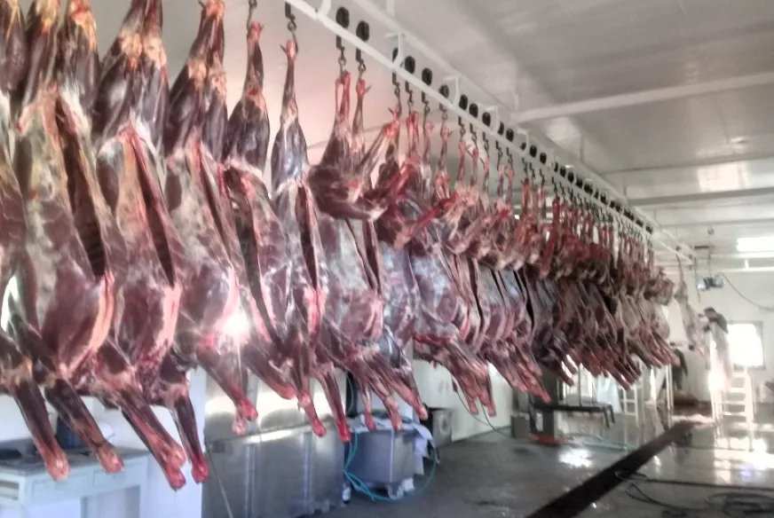
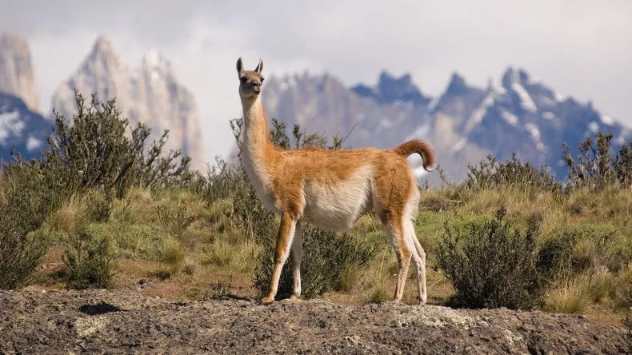
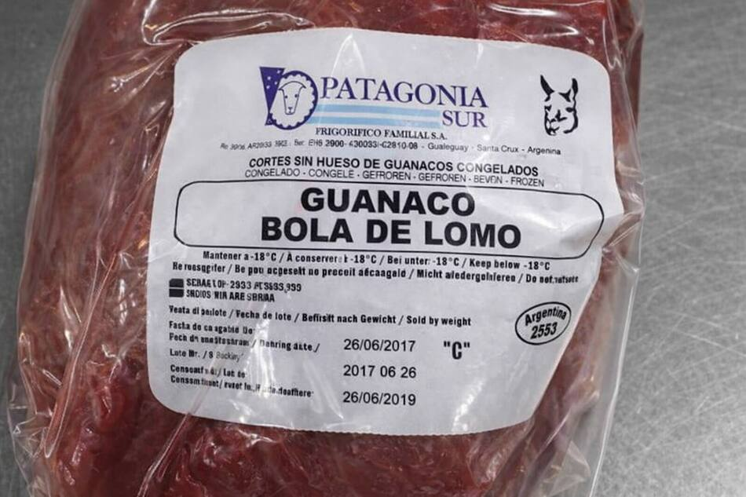
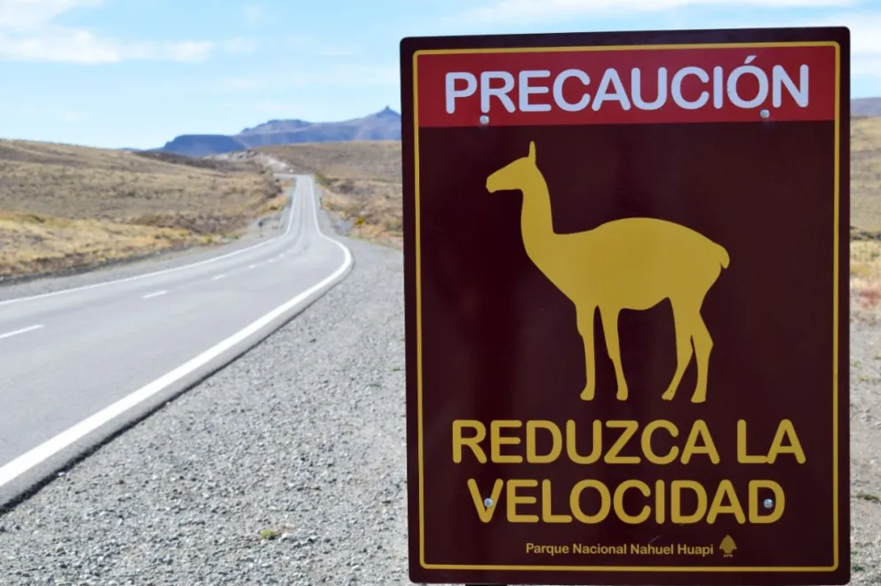
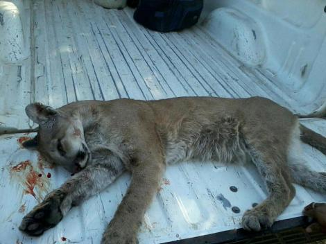
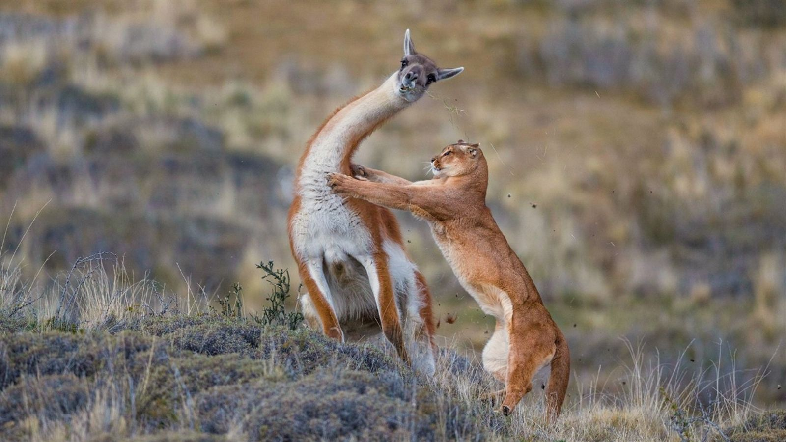
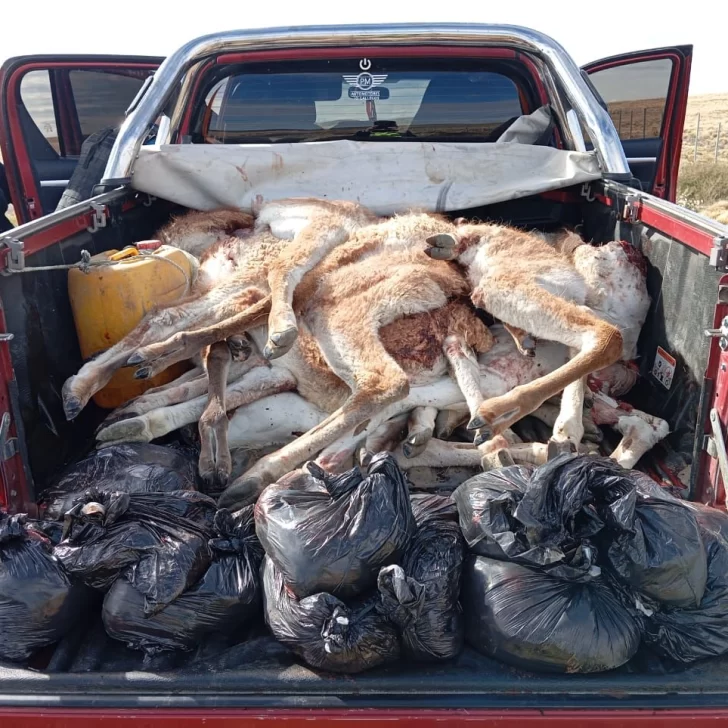
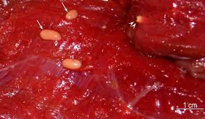

GUANACO MEAT
without censuses, insufficient controls and a government pushing consumption.

The guanaco (Lama guanicoe) is a native South American species, a wild camelid adapted to the harsh conditions of the Patagonian steppe. Of great ecological value, it inhabited the region for millennia, long before humans introduced sheep and cattle. It was the main sustenance of the indigenous peoples of Patagonia, who used its meat, hide, and wool.

The increase in beef prices in Patagonia is today dramatic. In April 2026, in a butcher shop in Trelew, Chubut, asado cuts are hard to find for under $25,000 pesos, while premium cuts like tenderloin far exceed $30,000 and can reach $40,000 in boutique butcher shops.
Faced with the excessive price increase of conventional meat, provincial and national governments are promoting the consumption of guanaco and donkey meat as an alternative to the collapse of domestic consumption caused by the record export of Argentina's best cuts to other countries.
In an improvised fashion, the meat of this native and wild Patagonian animal is already available on store shelves.

The export boom
In the first quarter of 2026, Argentina billed more than USD 1 billion in beef exports. The record export price — nearly USD 7,000 per ton — clearly makes it more profitable to sell abroad than to supply the domestic market.
The president of the Argentine Rural Society, Nicolás Pino, was the first leader to formally propose extending the consumption of guanaco and donkey meat nationwide. The General Secretariat of Karina Milei endorsed it as part of the "Argentine Meat Week" in the United States.
Santa Cruz: the only province with authorized slaughterhouses
In Argentina, the only slaughterhouses authorized to process guanaco are in Santa Cruz. The province has eight permitted exploitation modes and distributes six commercial cuts with traceability and sanitary certification. The Frigorífico Montecarlo in Las Heras is the central node of this chain.
Chubut, on the other hand, prohibits slaughter and sale within its territory. Neuquén and Río Negro have no active authorizations. The result is fragmented regulation where the same species — which does not recognize provincial borders — has a completely different legal status depending on the square kilometer in which it is found.
Ecological imbalance
The government presents guanaco meat as a solidarity solution to the crisis. The species is launched to market without anyone having counted how many specimens exist, or how many can be removed from the ecosystem without damaging it.
The guanaco did not reach regional butcher shops because of its nutritional value, but because of the chain of imbalances that pushed it to this situation.
For steppe sheep farmers, the guanaco has been a direct competitor for decades. It competes for pasture with sheep — an animal introduced in the 19th century.
Today many view the species negatively: it breaks fences and causes road accidents. But there have never been attempts to raise awareness and prevent accidents knowing that we coexist with wild fauna on the roads. Australia's kangaroo case is quite similar, with successful education and awareness strategies to prevent accidents.

The absent natural predator
The puma is the natural predator of the guanaco. The problem in Patagonia is that the natural balance is broken. Ranchers actively fight the puma because it attacks sheep, leaving the guanaco without its natural predator. The puma's diet on livestock farms is composed mainly of guanaco, while sheep represent four times less. However, the persecution of the puma — through hunting, traps, or poisoning — has reduced its ability to control guanaco populations.

But the puma is not a "pest" as many ranchers claim. It is an apex predator that fulfills an irreplaceable function in the ecosystem, keeping native herbivore populations under control and preventing further vegetation degradation. In a healthy ecosystem, guanacos are its main prey; by eliminating the puma, the balance is broken.

The supposed overpopulation of guanacos observed on Patagonian roads is, in part, a reflection of that imbalance, although there are no reliable data on the real state of the population.
Illegal hunting and the public health risk
While the government promotes formal consumption, a parallel network operates outside the law without any sanitary control. In 2025 alone there were notable cases: in June, a truck was intercepted carrying parts of 42 guanacos illegally hunted on the Somuncurá plateau, representing approximately 1,500 kg of meat. Months later, in December, raids in Trelew uncovered a suspected illegal network that even used a bus company for transportation. Environmental organizations denounced that the Somuncurá plateau is being devastated by "indiscriminate slaughter" feeding an illegal meat trade.

The risk: meat obtained by poachers undergoes no sanitary control. The guanaco, being a wild animal, naturally carries parasites transmissible to humans. The most frequent is Sarcocystis aucheniae, a protozoan that forms macroscopic cysts — visible to the naked eye as "rice grains" — in the animal's muscle fibers. Consumption of infected meat, raw or undercooked, can cause gastroenteritis with nausea, vomiting, diarrhea, and cramps. This zoonosis is commonly known in Patagonia as "arrocillo".

Guanacos can also carry Trichuris tenuis, Dictyocaulus filaria, and other Sarcocystis species, as well as parasites like Eimeria spp. and cestodes like Moniezia expansa. In a wild animal without vaccination or controls, the list of potential pathogens is long and largely unexplored.
The price of the food crisis
Families who cannot afford beef go out to the field to hunt a guanaco to feed themselves, without knowing the risks. Animal protein is a real necessity, but also a ticking time bomb. While the government promotes formal consumption, informality keeps growing in the shadows, with no one counting how much illegal meat circulates or how many silent intoxications occur each year in rural clinics.
The census mystery and lack of data
No one today knows how many guanacos there are in Patagonia. No official count exists. Only estimates without any real scientific basis.
Existing data are partial and contradictory. Before sheep arrived, Patagonia is estimated to have supported 22 million guanacos. Today estimates range from 600,000 to 2 million — a difference that makes it impossible to speak seriously of "sustainable exploitation."
What should be discussed
Treating the guanaco as a sustainable resource would require knowing the species' situation first, then exploiting it. For now, this is done in reverse.
The guanaco ended up in the spotlight because of the beef crisis, but the questions it should raise are much deeper: How many are there? How many can be used? Who controls the health safety of what reaches the table?
For now, while the government pushes formal consumption, poachers fill the void with an illegal chain that no one can guarantee is safe to eat.
And in the middle, a compromised native species, without census, without controls, and with a natural predator — the puma — being hunted to protect livestock introduced two centuries ago.
Report by GLOBALpatagonia. June 2026.